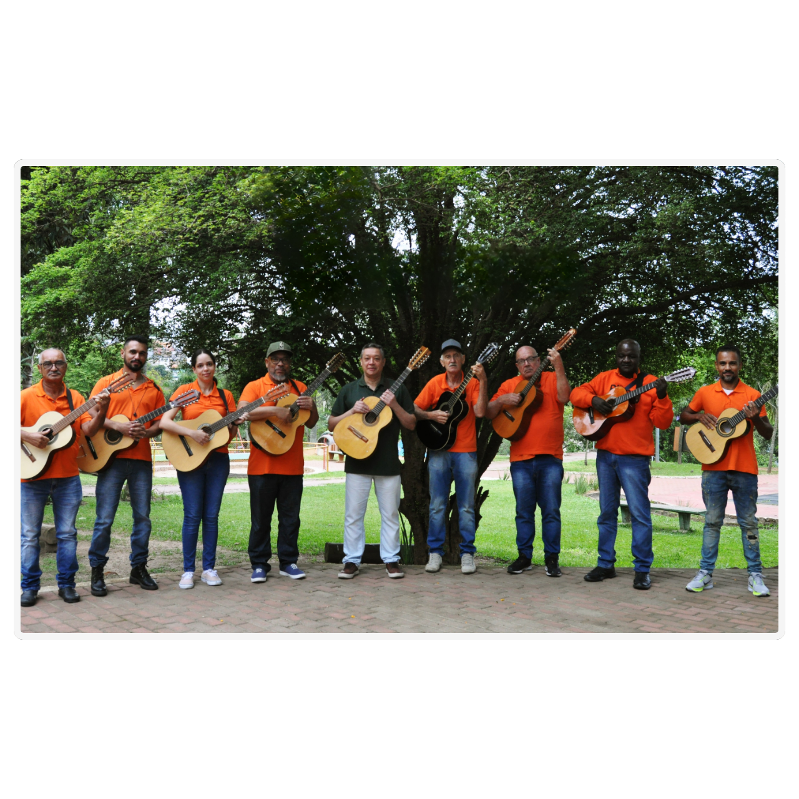

O som autêntico da tradição
sob regência do Maestro Renato de Sá

Fundada em 2018 na Oficina Cultural Alfredo Volpi, em Itaquera, São Paulo, a Orquestra Volpi de Viola Caipira nasceu com o propósito de valorizar e divulgar a cultura e a música caipira.
MÚSICA RAIZ
Cultura caipira e viola brasileira
ITAQUERA • SÃO PAULO
Orquestra de viola da Zona Leste
EVENTOS E CERIMÔNIAS
Repertório personalizado
Renato de Sá
Multi-instrumentista, compositor, arranjador e produtor musical, Renato de Sá conduz o trabalho artístico da Orquestra Volpi de Viola Caipira.
Seu trabalho reúne experiência musical, pesquisa e dedicação à valorização da viola e da cultura caipira, desenvolvendo arranjos que aproximam a tradição de diferentes públicos e gerações.